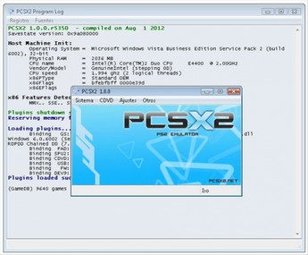

Emulador de Playstation 2
O PCSX2 é um emulador de PlayStation 2 gratuito e de código aberto para Windows , Linux e MacOS que suporta uma vasta gama de jogos de vídeo PlayStation 2 com um alto nível de compatibilidade e funcionalidade.
Embora o PCSX2 possa espelhar a experiência de jogo original no
PlayStation 2, o PCSX2 suporta uma série de melhorias em relação ao jogo
em um PlayStation 2 tradicional, como a capacidade de usar resoluções personalizadas de até 4096 × 4096, anti-aliasing e filtragem de texturas.
História
O PCSX2, como seu projeto predecessor PCSX (um emulador de PlayStation ), é baseado em uma arquitetura de plug-in PSEmu Pro spec, separando várias funções do emulador de núcleo. Estes são os gráficos, áudio, controles de entrada, unidade de CD / DVD e portas USB e FireWire (i.LINK). Plug-ins diferentes podem produzir resultados diferentes em compatibilidade e desempenho. Além disso, o PCSX2 exige uma cópia do BIOS do PS2, que não está disponível para download pelos desenvolvedores devido a problemas legais relacionados a direitos autorais. Desde setembro de 2016, o PCSX2 é parcialmente compatível com os jogos do PlayStation.
O principal gargalo na emulação do PS2 é emular o PS2 de multiprocessador na arquitetura PC x86 . Embora cada processador possa ser emulado independentemente, é difícil sincronizá-los com precisão.
Desenvolvimento
O desenvolvimento do PCSX2 foi iniciado em 2001 por programadores que
usam os nomes Linuzappz e Shadow, que eram programadores do emulador
PlayStation PCSX-Reloaded .
Outros programadores mais tarde se juntaram ao time, e eventualmente
conseguiram alguns jogos do PS2 para a tela de carregamento. A equipe começou então a trabalhar na difícil tarefa de emular o BIOS do PlayStation 2; eles conseguiram que funcionasse, embora fosse lento e graficamente distorcido. A versão 0.9.1 foi lançada em julho de 2006.
De 2007 a 2011, os desenvolvedores trabalharam no Netplay e aprimoraram a velocidade. O PCSX2 0.9.8 foi lançado em maio de 2011 e continha uma GUI revisada escrita com wxWidgets
que melhorou a compatibilidade para Linux e sistemas operacionais
Windows mais recentes, a adição de um novo recompilador VU que trouxe
melhor compatibilidade, um editor de cartão de memória, uma revisão do
SPU2 -X plug-in de áudio e várias outras melhorias.
Compatibilidade
A atual versão de desenvolvimento é relatada como compatível com
aproximadamente 96% de 2.629 jogos testados em agosto de 2018. Compatibilidade significa apenas que o jogo não trava, bloqueia ou insere um loop; ainda pode haver erros, falta de efeitos pós-processamento, texturas e sombras em muitos jogos compatíveis. Esse é especialmente o caso no modo de hardware; um modo de software mais lento está disponível para erros sem soluções alternativas.
As seguintes áreas de emulação de PS2 no PCSX2 ainda requerem mais pesquisa e desenvolvimento:
- EE Recompiler
- DMA, SIF, VIF e IOP
- Decodificador IPU MPEG-2
- SPU2 ADSR e Reverb
- Unidades Vetor Multithreaded
- Driver Vulkan GS
Recursos
O PCSX2 suporta estados de salvaguarda e recompilação dinâmica ( JIT ). Há também suporte para gravação de jogabilidade em Full HD usando o plugin GSdx.
Opções como a capacidade de aumentar / diminuir a velocidade do jogo,
usar cartões de memória ilimitados e utilizar qualquer controle gamepad
suportado pelo sistema operacional nativo também estão disponíveis. Códigos de truques são suportados através do uso de arquivos de correção PNACH.
Plug-ins
O PCSX2 faz uso de plug-ins como um meio de modularizar os esforços de desenvolvimento entre os componentes separados (subsistemas) do hardware emulado do PlayStation 2.
Por exemplo, os plug-ins de vídeo são utilizados pelo PCSX2 para
renderizar imagens na tela e emular o hardware gráfico do PlayStation 2,
enquanto os plug-ins de som emulam o hardware de som do PlayStation 2.
Isso não apenas permite que diferentes desenvolvedores se concentrem
seus esforços em um aspecto do hardware do PlayStation 2, isso também
permite que usuários que tenham uma configuração de sistema que não
produzam bons resultados com um plug-in tentem tentar outro para ver se
têm melhores resultados.
Vários plug-ins estão atualmente em desenvolvimento contínuo com foco em aprimoramentos de desempenho e compatibilidade. Segue uma lista de vários desses plug-ins:
| Nome | Subsistema | Notas |
| GSdx | Vídeo | O plug-in gráfico mais rápido e preciso. Requer suporte a Direct3D ou OpenGL e, opcionalmente, usa uma GPU. O plug-in GSdx é compatível com emuladores PSX, mas é limitado à renderização de software com eles. Existe também uma versão não oficial do ToCAEDIT e a versão do GSdx-Cutie. |
| GSdx FX | Vídeo | Pacote de shaders de pós-processamento para o plug-in GSdx. |
| ZZogl | Vídeo | Um plug-in gráfico menos otimizado que usa o Open GL. Compatível com Linux e Windows. Este plugin é um fork do plugin ZeroGS KOSMOS. |
| SPU2-X | Audio | O plug-in de som mais preciso. |
| SSSPSX Pad | Entrada | Um simples plug-in de entrada. |
| LilyPad | Entrada | Um plug-in de entrada avançado que suporta teclados, mouses e controladores. |
| Nuvee | Entrada | Um plug-in de entrada que suporta lightguns e mouse USB. |
| TwinPad | Entrada | Outro plug-in de teclado e mouse. |
| XPad | Entrada | Um plug-in de entrada do controlador Xbox 360. |
| CDVD | Óptico | Um plug-in de mídia ótica simples que executa jogos de discos ópticos. |
| Linuz ISO CDVD | Óptico | Um plug-in que possui a capacidade de compactar imagens ISO. |
| Dev9 | Disco rígido | Manipula a unidade de disco rígido PS2 e a emulação Ethernet. |
| MegaDev9 | Disco rígido | Uma versão mais avançada do Dev9. Atualmente, emite apenas parcialmente o disco rígido do PS2. |
| Netplay | Netplay | Um plug-in que permite que determinados jogos possam ser jogados em múltiplos jogadores pela Internet. |
|  Janela do Emulador |
Aprimoramentos Gráficos (Plugin GSdx)
O plug-in GSdx oferece uma variedade de melhorias de qualidade de
imagem em relação ao hardware original do PlayStation 2, como:
- Opção para aumentar a resolução interna (somente no modo de hardware)
- Anti-aliasing : FXAA , MSAA (apenas no modo hardware e também apenas com o backend D3D) e Edge-AA (emulado apenas no modo software)
- Pixel Shaders de pós-processamento
- Mipmapping (alternar com a tecla Insert; necessário para o funcionamento correto de alguns jogos, como as séries Jak e Daxter )
- Filtragem bilinear
- Filtragem anisotrópica
- Filtragem de textura
- Hacks Widescreen
Requisito do Sistema
Minimo
Sistema Operacional: Windows XP x86 (32 bits) ou posterior
CPU: SSE2 suportado, Pentium 4 ou superior, Athlon64 ou superior
Memoria: 2 GB RAM ou mais
Hardware Grafico: Pixel Shared 3.0
Recomendado
Sistema Operacional: Windows 8.1 x64 (64 bits)
CPU: Intel i5-2400 ou AMD FX-8350 ou superior
Memoria: 2 GB RAM ou mais
Hardware Grafico: DirectX 11 GPU
Os requisitos de hardware são amplamente dependentes do jogo.
Devido à natureza exigente da emulação, é muito mais provável que o
PCSX2 tenha um bom desempenho com hardware moderno de gama média a alta,
com sistemas de menor capacidade que experimentam desempenho inferior
ao total. O gargalo de desempenho na maioria dos casos é a CPU, e não a GPU . Esse é especialmente o caso no modo de software, no qual somente a CPU é usada para emulação. No modo de hardware, a GPU emula os gráficos, mas ainda pode ser um gargalo se a resolução interna estiver definida muito alta. Alguns jogos também podem ficar mais lentos devido a códigos gráficos não otimizados ou placas de vídeo fracas.
Como o hardware do computador continuou avançando com o tempo, a
probabilidade de problemas de desempenho com o PCSX2 sofreu uma redução
correspondente.
Site: PCSX2